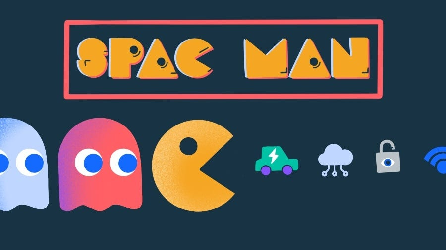

Banking Games while SPAC’ing consumer brands


a new category of games just created for financially empowering people with fun games. What if they are zero-sum games that exploit all these theories and discovery of game theory, system thinking, and design thinking to offer amazing gaming experiences? Don't see it as a Casino because it isn't ! it is rather a collaborative learning space that rewards financially your progress and engagement in learning while gaming.
Creating genres at the intersections of genres that are already popular and stuck into the mind of consumers is for an entrepreneur competing against non-consumption a path for creating category-defining products and services. Games are products that can embed services and this new genre of games that I am writing about embed financial services.
6 years ago it was already about embedding financial services in eCommerce platforms and four years later Apple offered this credit card
the features of this credit card were all into those new eCommerce business models that had to be built. A failed initiative, project, and startup that taught me that location matter a lot. But I still believe that there are sectors like eCommerce that could be disrupted worldwide from Africa. Let me tell you that now there is this opportunity for you to after retail consumer brands, building a SPAC that will acquire them and accomplish their digital transformation. The Gamestop squeeze that the financial market experienced was about that but it is only about one, brand Gamestop and games rather than jewelry, clothing, Household furniture, Washing machines, Sports equipment, or the consumer product category you want. This opportunity is like the one that I highlighted in this article titled post-pandemic and corporate restructuring.
You are clever enough to connect this SPAC with the Banking Games model presented in the paragraph above because the goal of the entrepreneur competing against non-consumption is to connect the dots and we hopefully live in a connection economy that always rewards those who connect ideas, things, and people using technology to build a connection engine that eases the creation of those connections.
Hope you this insight to make your contribution to this new tech-driven economy we are living in. For myself, I am trying to make my contribution by writing this and trying to build things. I should tell you that it is hard and filled with failures because I failed a lot during all these 10 and more years but you can succeed for sure by being an entrepreneur competing against non-consumption.
PS: If you want to know about Book Dojo that’s here but for Godda Game that’s here. This ps reminded me of this feature for search engines like this one but this one here deals with the age of articles because the article about book dojo was written on December 13, 2020. it is just a hazardous event if this one is published on July 13, 2021 (Time neighborhood ). There are some who think things about 13, for me, I have no idea. this search engine feature can be in this book which is not a data-driven book like those Book Dojo seek to ship to book lovers and book communities.